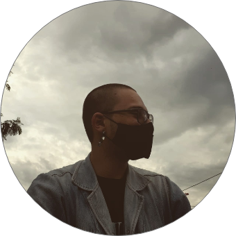

Sobre mim

Olá, me chamo Adriel Lira. Tenho 20 anos e resido na cidade de Francisco Morato - SP. Sou Estudante de informática para internet pela instituição Senac Penha e, nas horas vagas, escrevo os silêncios de uma vida inteira.
.png)

.png)
Música
Escrita
Talvez um dia me recorde,
Dos padrões dos risos
Que já dei.
E, assim, mesmo que
Por memória,
Simule no rosto
Um sorriso.
Talvez um dia eu não fale
Mais em metáforas.
E, seja sincero como criança
Ao mostrar onde dói.
Talvez eu suba até
O topo da pelagem
Do coelho da cartola,
Para adorar uma vida
Que o adulto ignora
E capturar dos ventos,
Um remédio
Para meu olhar
Sem esperança.
Silêncio
Observei calado
Os seus pés
Dançando com as
Folhas secas,
Com o fim do outono.
Observei calado
O seu prazer por peças
E, imaginei, que
Tipo de mentiras
Saem da sua boca.
Observei calado
Sua coragem e
Desejei aprendê-la
Mais de perto.
Salguei memórias
De seus olhos marejados,
Para que eu não as veja
Novamente em
Meus sonhos.
Em silêncio,
Aprendi sobre ti
Mais do que
Qualquer outro.
Em silêncio,
Desenhei seu sorriso
Com alguns
Adjetivos bobos.
Para ti, um poeta
Para coloca-la em poesia
Tive que me reescrever
Como poeta.
Me despi da ironia,
Da mentira
E da tragédia.
Em minha imaginação
Seu corpo jaz
Em um vestido de Cetim,
Aguardando um abraço meu,
Guardando em mim
Um traço seu,
Mergulhando em olhos meus,
Aquecendo o peito seu,
Tragando em alma minha
Seu dulçor, espantando
Minha dor, ao ver a beleza
Que há, em amar-te por inteira.
E agora, o que tem deste poeta?
O manjaleco escolheu
Manter sua fragrância
E, deixar no passado,
O título de poeta da redundância.